Carrot Cake
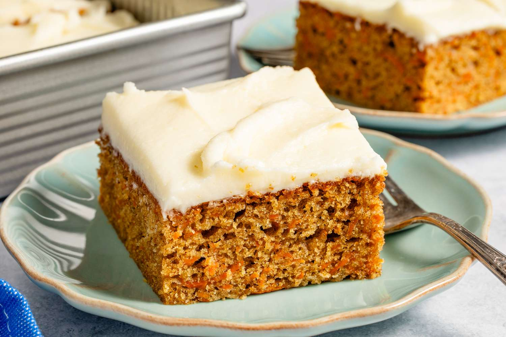
Made with fresh grated carrots and pineapple chunks, this spiced cake is the perfect way to enjoy your fall. With a perfectly decadent cream-cheese frosting and chopped walnuts, this dessert is moist and warm.

Made with fresh grated carrots and pineapple chunks, this spiced cake is the perfect way to enjoy your fall. With a perfectly decadent cream-cheese frosting and chopped walnuts, this dessert is moist and warm.
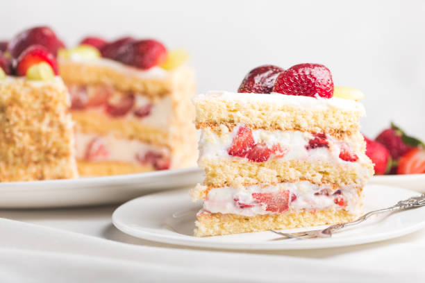
Can you think of a better combination than whipped cream and juicy, red strawberries? Each layer of airy sponge cake is generously frosted, so you get a light, fruity dessert without a synthetic taste.
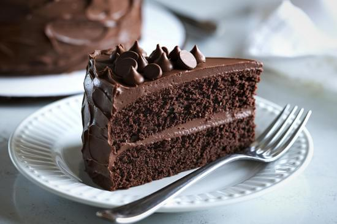
Thick, sticky dark chocolate ganache layered with hazelnuts on moist, dense milk chocolate cake with an intense cocoa flavor. The key is a small amount of coffee and a hefty dose of vanilla to deepen the flavor!
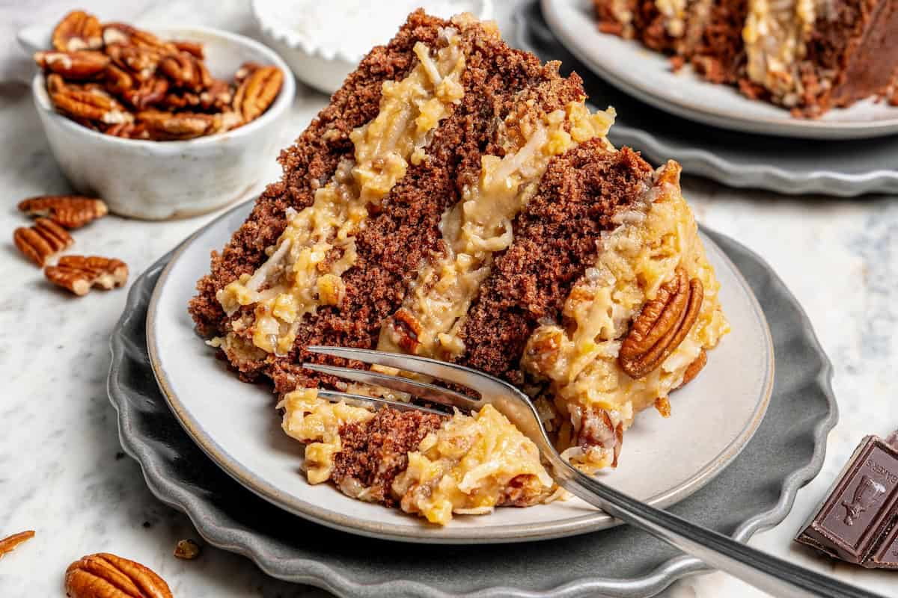
Milk chocolate cake with a sweet, caramel-pecan-coconut filling. Coconut is the star in this dessert! We toast the coconut before folding in thick caramel and chopped pecans for a more complex nutty taste.
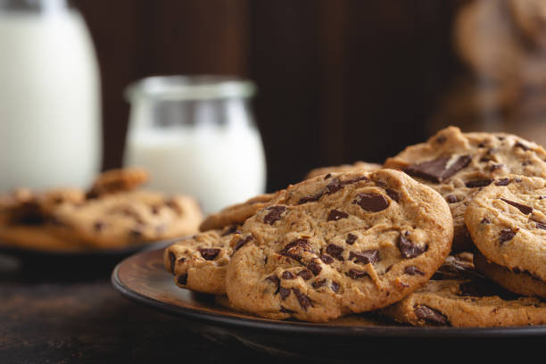
Semi-sweet chocolate chips with brown butter, flaky sea salt, and chunks of fresh, house-made caramel. Chewy on the outside and soft and gooey on the inside, each bite is buttery, chocolatey perfection.
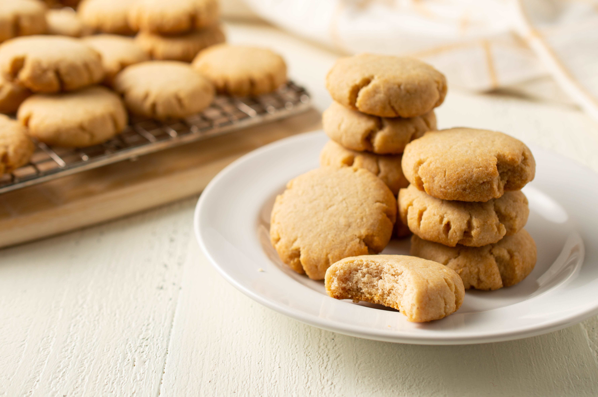
What's the key to the perfect shortbread? Brown butter and brown sugar creamed together for a smooth, light texture and a rich, nutty taste. We recommend dipping in milk or tea to soften, or enjoy plain for a crispier texture.
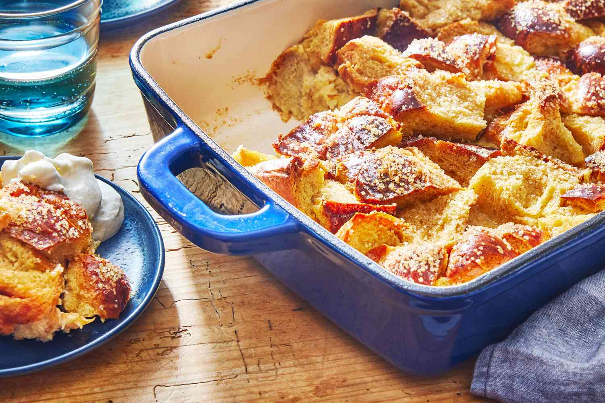
Flaky bread soaked in thick custard, rum, and butter, and mixed with chocolate chips, raisins, or chopped walnuts. This simple dessert is mouthwatering served warm with vanilla ice cream on top.
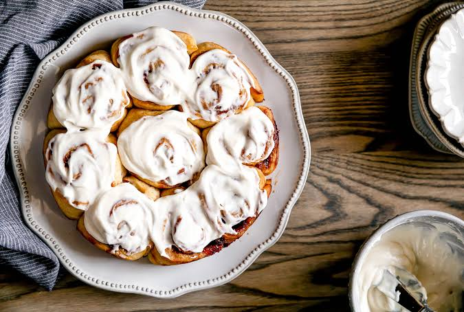
Croissant-style peel-apart dough with warm cinnamon and gooey butter. A thick cream-cheese frosting elevates the dish further. Enjoy warm with a cup of hot chamomile tea or a glass of milk.
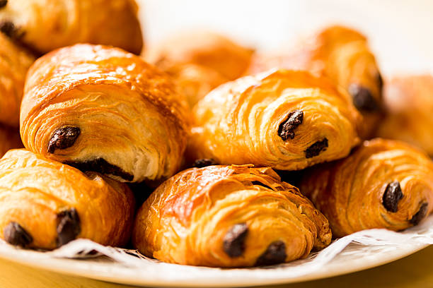
Flaky, buttery, laminated dough filled with dark, milk, or white chocolate and a dash of flaky sea salt to bring out the sweetness. Best eaten fresh from the oven with a cold glass of milk.
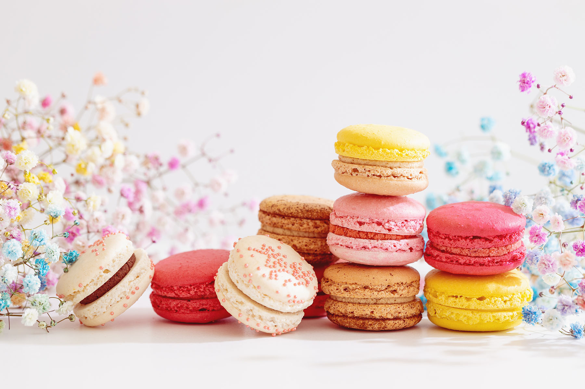
A delicate cookie made with almond flour and a thick, creamy center. Take red for rose, green for pistachio, pink for strawberry, blue for blueberry, brown for chocolate, white for vanilla, and gray for black tea.
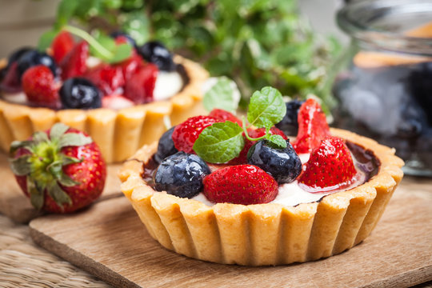
A flaky, butter crust topped with sweet French vanilla custard and fresh sweet and slightly tart fruits (strawberries, blueberries, kiwi, oranges, apples, and pears). A sugar glaze offers a glistening, sweet finish.
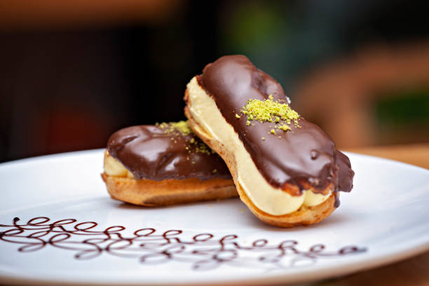
A light oval pastry served cold. Thin choux dough filled-to-bursting with custard or whipped mascarpone cream and coated in a glossy chocolate, vanilla, matcha, strawberry, coffee, or mixed glaze.
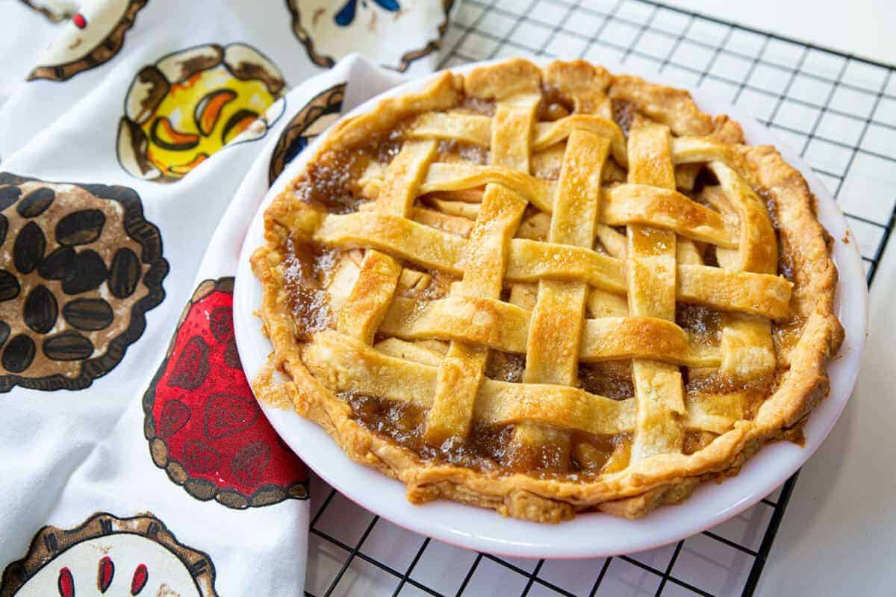
Thinly sliced apples in a flaky pastry crust.
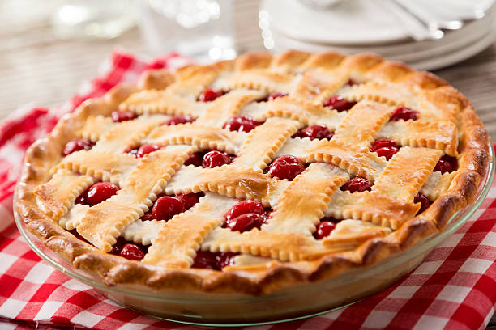
Sweet and tart cherries in a flaky pastry crust.
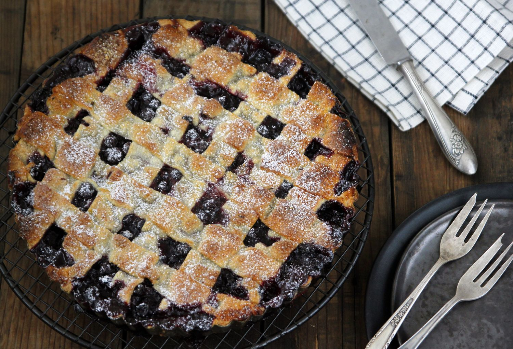
Wild blueberries in a flaky pastry crust and topped with crunchy roasted granola.
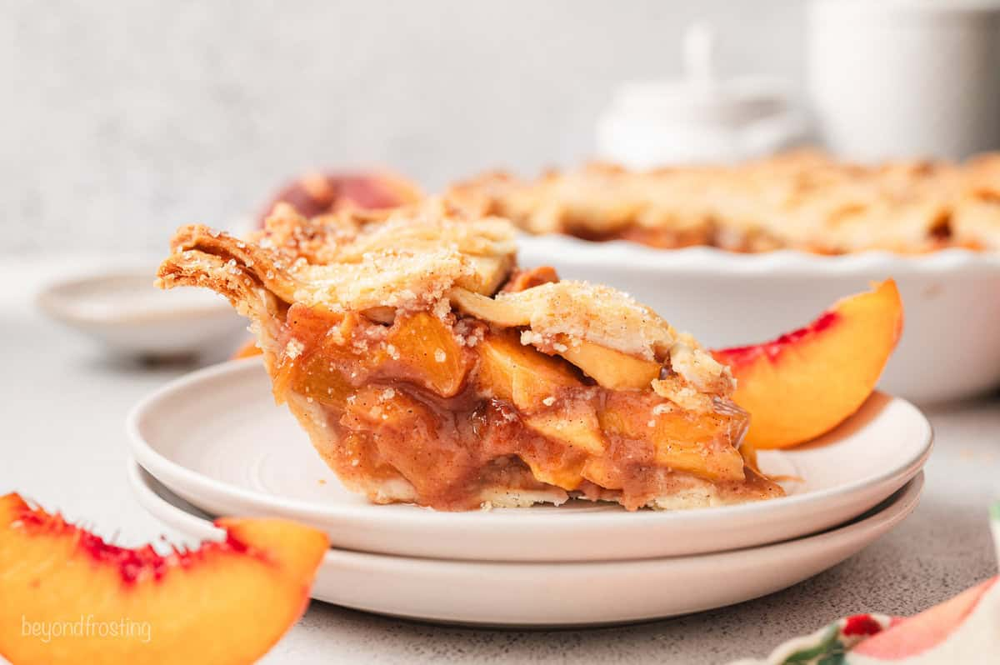
Juicy peaches with cinnamon in a flaky pastry crust.
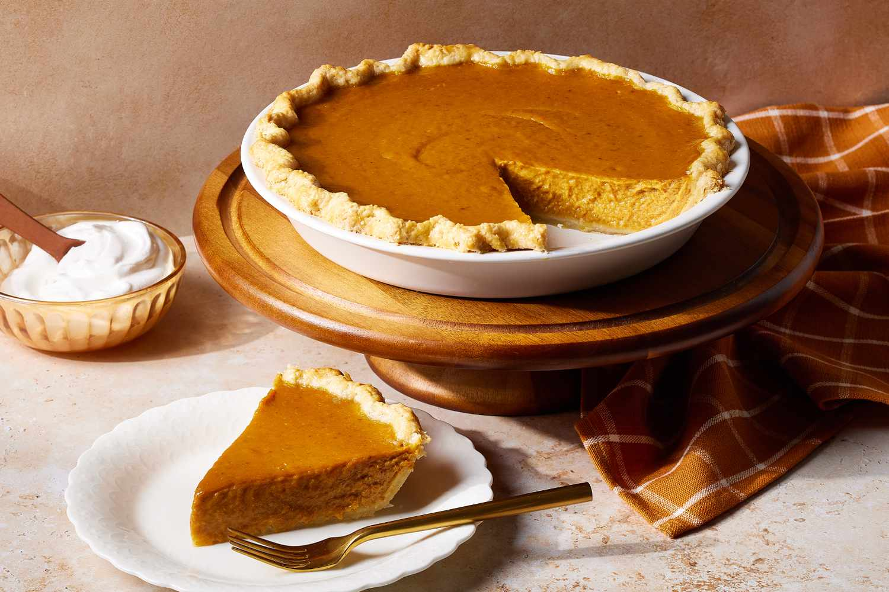
Spiced pumpkin filling in a flaky pastry crust.
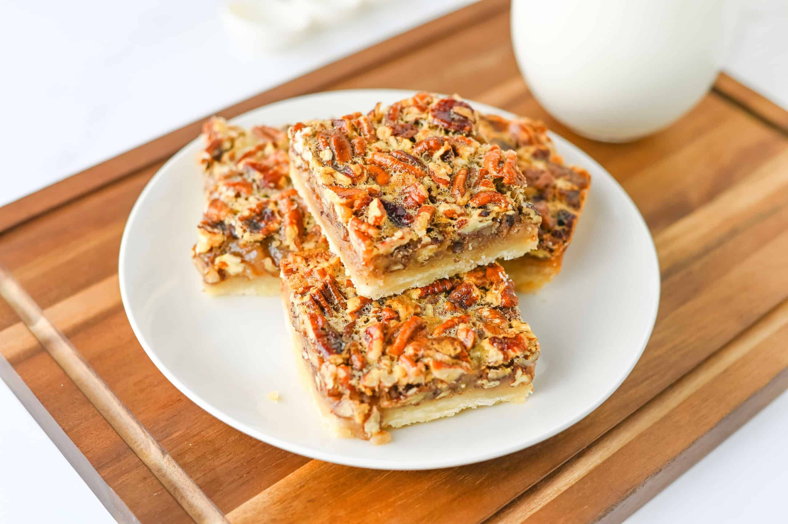
Caramel and toasted pecans in a flaky pastry crust.